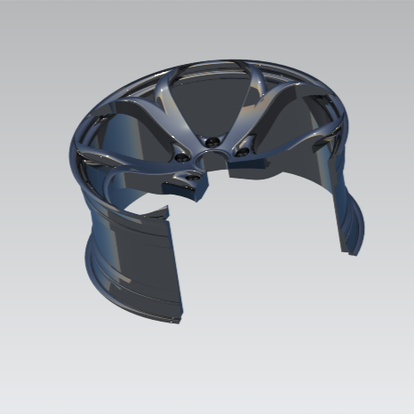

03 / MECHANICAL DESIGN / CAD
Wheel rim design
A sculpted five-spoke rim developed through solid modeling, sections, and rendering.
The objective
Develop a wheel-rim model that brings together a distinctive spoke pattern, a central mounting region, and the surrounding rim geometry.
The approach
The project progresses through spoke and rim iterations to a completed five-spoke model. Full and half sections expose the internal geometry, while rendered views communicate the shape and surface transitions.
The outcome
The final CAD model is documented with multiple material appearances and section views. The result pairs an exterior design study with views that make the underlying geometry easier to inspect.
Scope & interpretation
The project demonstrates geometric design and visualization. Structural performance, fatigue life, manufacturing feasibility, and road-use suitability are not established by the supplied material.

